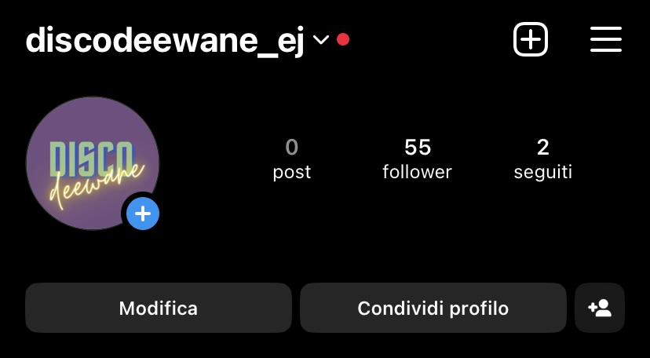

Disco Deewane è un sito che vuole offrire l'opportunità alla comunità indiana o a chiunque sia interessato o incuriosito da essa, a partecipare a serate organizzate in varie città italiane per creare qualcosa di alternativo e originale che attualmente in Italia non è presente come nelle altre grandi città europee.
Inoltre vuole offrire alle persone di creare comunità di persone legate dal divertimento che procura la musica indiana.
Questo progetto nasce perché ho sentito la mancanza di una comunità di persone della mia generazione che abbia i miei stessi interessi musicali e con le quali condividere divertimento e passione per la musica, come invece in altri paesi Europei questa idea era abbastanza diffusa. La domanda che mi è sorta spontanea è stata: perché non in Italia, dove la popolazione indiana ha un'affluenza molto alta?
Da questo nasce la mia idea di portare questa iniziativa a conoscenza dei miei coetanei e a chiunque sia interessato a conoscere una cultura nuova attraverso anche la sua musica.
Offrire serate a tema Bollywood per creare comunità di persone legate da una passione comune, dare loro la possibilità di conoscere nuove persone, un nuovo genere musicale e una nuova cultura.
principalmente giovani adulti: dai 18 ai 30 anni originari indiani e chiunque sia incuoriosito o appassionato dalla cultura musicale indiana
a -livello Internazionale: Indo Werehouse: é uno show organizzato in varie città importanti come Londra o altre città Europee come Parigi. Sono originari di New York dove organizzano una moltitudine di show e fanno tour in tutto il mondo. Riescono ad organizzarsi con vari artisti e Dj famosi che trattano e lavorano con musica indiana.
a -livello nazionale:
-Krishna Indian Bazar: ha organizzato una "Bollywood disco night" con ospite speciale DJ CHEEKA a Milano il 30 marzo
- DJ/gli organizzatori delle varie discoteche nelle grandi città italiane che ho scelto (che però potrei far diventare un punto a favore facendoli diventare parte della mia iniziativa).
nella selezione dei font ho scelto:
Bebas Neue per quanto riguarda i titoli perché è una font semplice ma d'impatto, in modo tale che il target utente leggendo capisca subito quale sia il tema.
Libre Baskerville per quanto invece riguarda il resto che è una font serif.
Nella scelta colori mi sono focalizzata su quelli che mi ricordassero l’India e la sua cultura come:
-il giallo che mi rimanda alla luce, al calore e la festività in cui esso é un colore molto dominante.
-il viola che mi dà l'impressione di regalità e mi ricorda anche l’epoca passata, la musica classica di altri tempi che é sempre immortale che sarà inclusa anch'essa nelle serate dedicate.
-il verde che mi ricorda la natura e sempre le epoche passate in cui si danzava sotto la pioggia, sull'erba bagnata e sulle foglie secche, lo associo anche al colore della pace per rispecchiare il mio pensiero: "la musica unisce le menti".
-accenni di bianco a cui io associo la purezza (molto importante per la cultura indiana), il colore della libertà (di cantare, ballare, conoscersi).
accenni di rosso, che rappresenta l'amore e quindi anche il matrimonio (in cui la musica è sempre fondamentale), per rappresentare l'unione amorosa. Non è per me un aspetto fondamentale e infatti ci sono solo degli accenni a questo colore.
Ho cercato di unire tutti questi colori creando una locandina utilizzando Canva:
ho fatto la scritta “deewane” in neon giallo e ho aggiunto qualche ballerina e ballerino che stessero danzando la danza classica per ricordare che non c'è danza senza musica.
Ho inoltre giocato con gli stessi colori per quanto riguarda anche il logo in alto a sinistra nella pagina home.
Per la locandina nella sezione "festival" ho scelto i colori giallo e viola.
Ho cercato di utilizzare meno immagini possibili da Google (ho utilizzato quelle con licenza libera per quanto riguarda le foto delle città in "eventi e date") e ho preferito creare da sola delle sottospecie di volantini utilizzando Canva, in modo tale da evitare problematiche con il copyright. Ho utilizzato una sola immagine da Freepik che poi ho utilizzato come sfondo.
Html e CSS.
-Viusual studio code;
-Canva (logo in alto a sinistra, locandina nella home, immaginilogo Spotify e Youtube, locandina in "festival");
-Spotify e Youtube (collegamenti alle playlist tramite link);
-Bootstrap (home per le immaginilogo per Spotify e Youtube);
-Google fonts (per le font dell'intero sito);
-Adobe color wheel per la scelta dei colori in tutto il sito;
-Fontawsome (icona instagram e documentazione);
-Freepik (sfondo della pagina "about" e "festival");
Il sito permette di avere un assaggio di quello che potrebbe essere la "colonna sonora" di una serata in discoteca (che sia all'aperto, al chiuso, su una barca, in spiaggia) a tema Bollywood. In Italia non esiste o comunque non se ne sente parlare di questo genere di serate, come invece in molti altri paesi europei è molto diffusa.
Ne sono testimoni gli svariati video su Tik Tok che ho trovato riguardo a questo tipo di eventi ed è esattamente quello che il sito vuole rappresentare: dare la possibilità a tutti di poter ricreare (e creare) la stessa magia.
Essendo il target audience giovani adulti dai 18-30 anni, ho scelto instagram come piattaforma iniziale su cui approdare in quanto credo che sia un social in cui le persone sono molto più "attente" a qualsiasi azione compiono: che sia un like o un follow o una condivsione (come invece con Tik Tok è diverso e si è "sottoposti" ai contenuti) Altri social, come ad esempio Facebook, sono più adatti a un'età più matura. Detto ciò per promuovere inizialmente il mio sito ho prefissato di raggiungere entro il primo giorno di creazione del sito e della pagina instagram: 50 followers su Instagram ed arrivare almeno a 50 visualizzazioni del sito web.
Il target principale sono i giovani adulti dai 18-30 anni perché credo che il "fare serata" sia un'usanza tipicamente dei giovani. Inoltre il genere principali delle canzoni scelte sono molto contemporenee e quindi a persone più anziane potrebbero non piacere.
creazione di una pagina Instagram dedicata e invio dell'URL del sito web ai miei contatti e gruppi su Whatsapp.
Il primo giorno come prefissato ho raggiunto 50 follower su Instagram
